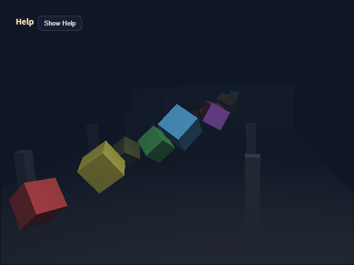

fog_cube
English | 日本語

Overview
- This sample demonstrates the
WebgAppfog features in one scene - You can switch
mode,near,far,density, andfog colorwith the keyboard or CommandPalette and inspect how they affect groups of cubes arranged at multiple distances - It uses cube groups, a floor, and walls arranged across several depths so you can focus specifically on how fog looks
How to Run
- Open ./fog_cube.html
- Use a browser with WebGPU support, and check the help panel and HUD together with the sample when needed
- Press
/or double tap the canvas to open the CommandPalette and change fog settings
webg Features Used
WebgApp: initializes fog settings, HUD, input, and the camera rig togetherEyeRig(type="orbit"): adjusts the viewpoint by drag, arrow keys, and the mouse wheelPrimitive: generates floor, wall, cube, and pillar shapes asModelAssetShape.setMaterial("smooth-shader", ...): applies the standard material with fog to each objectShape.setWireframe(): switches some cubes or the whole scene to wireframe and confirms that fog also affects wireframe renderingMessage: displays the operation guide and current fog stateCommandPalette: controls fog mode, wireframe, near, far, density, color preset, pause, and reset
Checkpoints
- When switching
off / linear / expwith1 / 2 / 3, compare how the distant cubes and floor fade away - Change
nearwithQ / WandfarwithA / S, and confirm that the start and end positions of linear fog move as expected - Change
densitywithZ / Xand confirm that the attenuation strength of exponential fog changes smoothly - When switching fog-color presets with
C, confirm that the background color and fog color line up and change the atmosphere of the whole scene. Presets include not only dark blue tones but also a white-mist style - Use
4to show only some cubes in wireframe and5to show the whole scene in wireframe. Confirm that the wireframe lines also blend into the distance under the same fog settings as normal rendering - Confirm that even when the orbit camera moves, fog is still applied based on view distance rather than object identity
Controls
- Drag / arrow keys: orbit camera rotation
- Mouse wheel /
[ / ]: zoom 1: fog off2: linear fog3: exponential fog0: return to solid display4: toggle wireframe display for some cubes5: toggle wireframe display for the entire sceneQ / W: decrease / increase fog nearA / S: decrease / increase fog farZ / X: decrease / increase fog densityC: switch fog-color presetsSpace: pause object rotation and vertical motionR: return the camera and fog to their initial values/or canvas double tap: open the CommandPalette